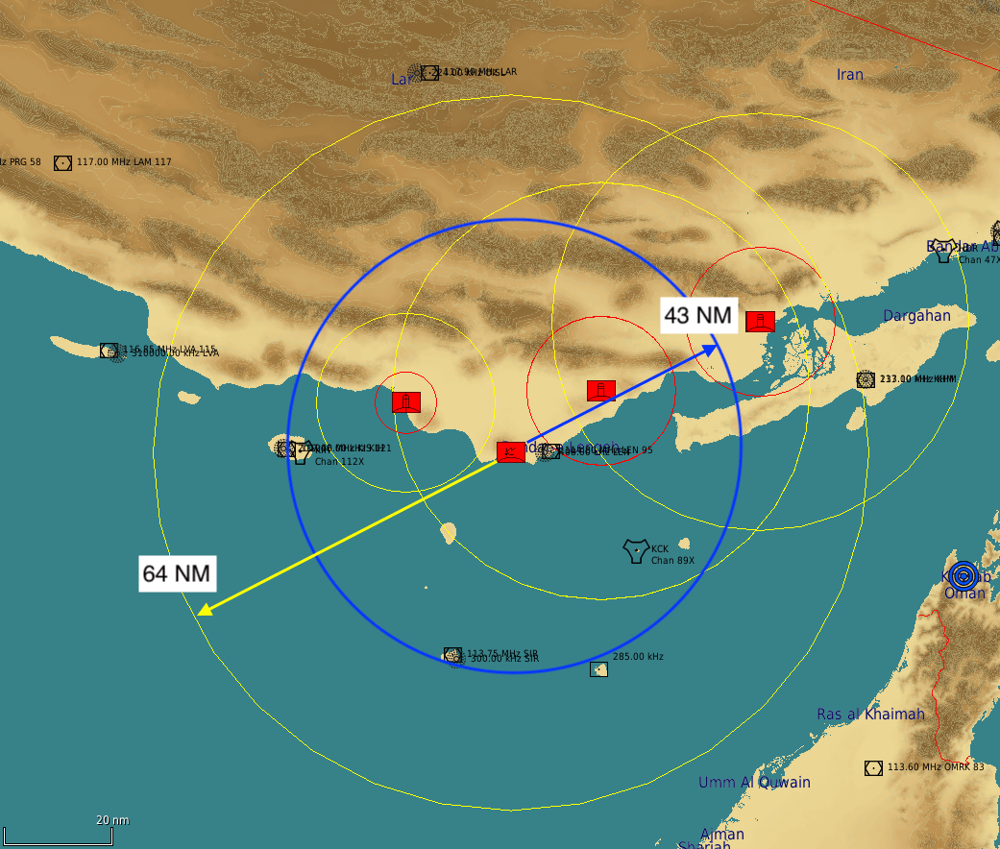
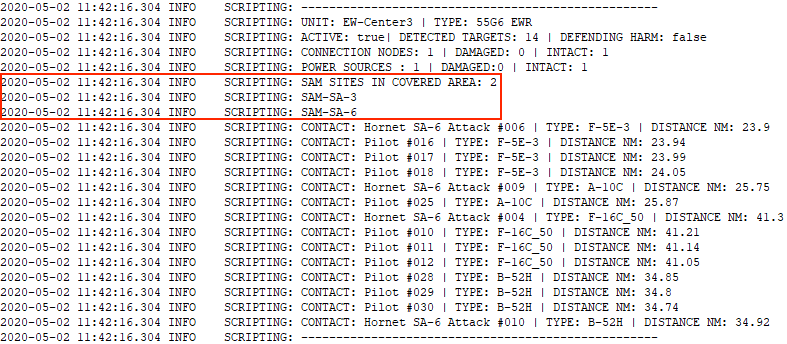

FAQ¶
Skynet IADS a-t-il un impact sur les performances du jeu ?¶
Skynet peut même les améliorer lorsque la mission comporte beaucoup d'unités SAM pilotées par l'IA, parce qu'il coupe les émissions radar de tous les groupes SAM qui n'ont aucune cible à portée. Sans lui, ces groupes garderaient leur radar allumé. Skynet met par ailleurs en cache les informations de cible pendant quelques secondes, ce qui évite des appels coûteux à la détection radar de DCS.
Quelles unités de défense aérienne ajouter au Skynet IADS ?¶
En théorie, tous les types listés dans le fichier skynet-iads-supported-types.lua. Les unités à très courte portée (la DCA Shilka, le Rapier) ne tireront pas grand-chose de l'IADS, sinon la réaction aux HARM. Autant les poser simplement dans la mission et les laisser à l'IA de DCS. C'est dû à la faible portée de leur radar : le temps que l'IADS les réveille, le contact est généralement déjà sorti de leur domaine de tir. La force de Skynet IADS est ailleurs : dans la gestion des systèmes à longue portée qui travaillent au radar.
Quels systèmes SAM peuvent engager les HARM ?¶
En juillet 2022, seuls le SA-15, le SA-10, le NASAMS et le Patriot ont été confirmés capables d'engager des HARM. Pour une défense anti-HARM solide, la meilleure option consiste à disposer des SA-15 autour des EW radars et des sites SAM à forte valeur.
Que fait Skynet aux SAM, exactement ?¶
Le moteur de script permet d'allumer et d'éteindre les émetteurs radar. On peut aussi agir sur l'état d'alerte et sur les règles d'engagement. En résumé, c'est tout ce que fait Skynet. Il lit également les caractéristiques de portée radar et de portée de tir d'un site SAM ; à partir de ces données et des options fournies par le concepteur de la mission, il allume ou éteint le site.
Aucune intervention divine n'est employée — pas de HARM qu'on ferait exploser par magie via le moteur de script. Si un site SAM ou un EW radar détecte un HARM entrant, il coupe simplement son radar, comme dans la réalité. Le HARM, tel qu'il est programmé dans DCS, tente alors de planer jusqu'à la dernière position connue, et manque sa cible la plupart du temps de 50 à 100 mètres.
Pourquoi un site SAM ne réagit-il pas à un avion qui le survole ?¶
Parce qu'un site placé sous contrôle du réseau a son radar éteint : il est donc aveugle. Il s'allume quand un EW radar qui le couvre lui transmet un contact — et pas autrement. Volez sous l'horizon des EW radars et aucune batterie ne réagira, quelle que soit la distance.
Le corollaire surprend en sens inverse : détruisez les EW radars et les sites restants deviennent plus agressifs, puisqu'ils repassent sous le contrôle de l'IA de DCS, qui allume tout et engage.
Ce comportement est adouci par la dernière ligne de défense : un site éteint conserve un petit rayon de détection virtuel qui lui est propre, si bien qu'un avion qui le survole le réveille même si aucun radar nulle part ne tient de contact. C'est actif par défaut, et désactivable.
« Couvert » veut-il dire que l'EW radar alimente ce site ?¶
Non. La couverture est une simple distance en 2D entre l'EW radar et la batterie, comparée à la portée de détection du radar — sans horizon, sans relief, sans altitude. Elle dit que l'EW radar est près de la batterie, jamais qu'il lui transmet effectivement quoi que ce soit. Un seul radar à longue portée peut afficher une douzaine de batteries comme couvertes tout en ne détectant rien du tout.
Y a-t-il des bogues connus ?¶
Oui : lorsque vous placez un site SAM composé de plusieurs unités (SA-3, Patriot…), veillez à ce que la première unité posée soit le radar de veille. Si vous commencez par un autre élément, Skynet ne parviendra pas à lire les données radar. Le site SAM ne s'activera alors jamais. Ce bogue a été observé dans DCS 2.5.5. Le même site fonctionne normalement en unité autonome, hors Skynet.
Comment savoir si un site SAM est à portée d'un EW radar, ou d'un site SAM en mode EW ?¶
Pour s'en faire une idée grossière, on peut regarder les cercles de portée dans l'éditeur de mission. Ces portées sont toutefois supérieures aux portées de détection réelles en jeu, qu'il s'agisse d'un EW radar ou d'un site SAM. La capture ci-dessous montre la portée de l'EWR 1L13 : l'éditeur de mission annonce 64 NM (milles nautiques), là où la portée en jeu est de 43 NM.
Dans cet exemple, le site SAM au nord-est ne serait pas à portée de l'EW radar ; il passerait donc en mode autonome au démarrage de la mission.

Activez les options de débogage samSiteStatusEnvOutput et earlyWarningRadarStatusEnvOutput
(voir activer les informations de débogage) pour obtenir le
détail de chaque site SAM et de chaque EW radar.
Le texte encadré en rouge indique quels sites SAM se trouvent dans la zone couverte par un site SAM
ou un EW radar.
